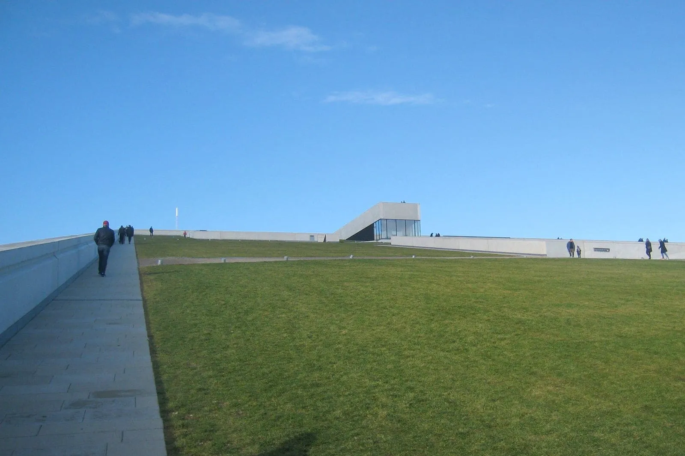
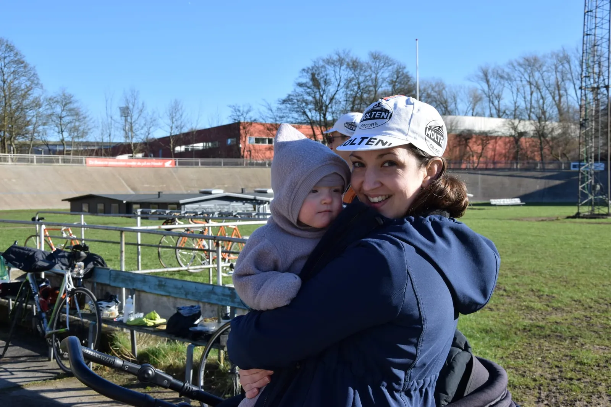
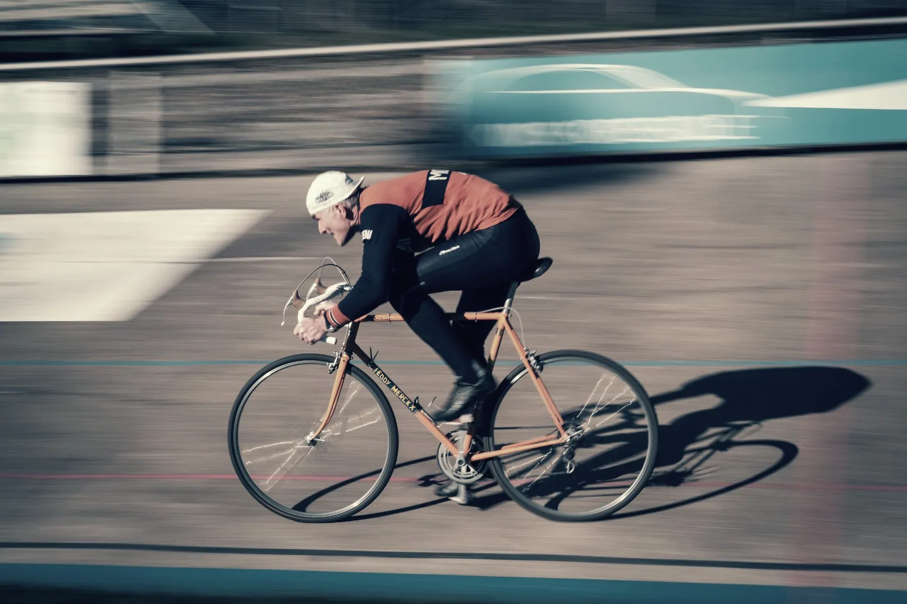

Dobbeltsejr til Molteni ved Omloop Het Volk Aarhus og Grandprix Molteni 333,33

Squadra Molteni satte sig tungt lørdagens dobbeltprogram: Omloop Het Volk Aarhus og Grandprix Molteni 333,33. Molteni kom i mål med alle sine ni ryttere på de ni første pladser ved Omloop Het Volk Aarhus og Grand Prix Molteni 333,33 blev vundet at watt-monstret Grane Maaløe.
Aarhus Cyklebane var startsted for årets Het Volk Aarhus. Den legendariske udendørs cement vélodrome i Marselisborg, der vækkede Jørgen Leths fascination for cykling emmer af cykelkultur, dengang der blev kørt på stålcykler med tåclips og uden hjelm. I den lille ryttergård på indercirklen, hvor Squadra Molteni er tildelt omklædning og opvarming med kaffe og Molteni Porto fra Bjørnsteens og Jacobsens hjemmebryg, ligger der i vinduet løbskataloger fra 1980erne. Jimmi Madsen står på startlisten i juniorklassen. På væggen hænger et billede fra nok slut 40’erne med tusinder af tilskuere på lægterne og bagved kan man skimte totalisatorboden.
Den står der heldigvis stadig, Aarhus Cyklebane. Der er stadig løb og træning takket være banechef Johannes Ollerup Sall og sportschef Michael Berling og de øvrige ildsjæle. Og i vintersæsonen er der på på græsset i indercirklen og i krattet udenfor cyclecross-træning for alle aldre med Joachim “mere ild” Parbo i spidsen.

Squadra Molteni stod til start med hjemmebanerytterne Svend Seegert og Lars Munch Larsen, kaptajn Niels Bjørnsteen, grimpeurs Jeppe Thiemer og Kristian Blume og Eigil Leegaard, superpuncheur Grane Maaløe samt domestiques Carsten Jakobsen og Jens Langergaard.
På bakkerne syd for Aarhus var det dog Svend Seegert der viste storform og trak Moltenitoget fri af feltet allerede efter 5-10 km.
Afstanden til feltet blev derefter kun øget og Omloop Het Volk Aarhus udviklede sig til et internt Molteni-mesterskab. Nede ved Odder drejede ruten igen nordpå ad små, krogede Vlandern-look-alike biveje med krappe stigninger, og da Moesgaard Museum blev passeret var hullet til feltet oppe på 30 minutter.

Je neemt me niet kwalijk
I Vlandern siger de “je neemt me kniets kwalijk” (jeg fortryder intet). Og det gør Molteni heller ikke. Med godt 10 km til mål indtraf der en episode ved Moesgaard Museum og som højest sandsynligt fik den konsekvens, at en af museets vagter smider en langtidssygemelding med PTSD på mandag.
Sagen var den, at Bjørnsteen og Grane, nu hvor vi havde 30 minutters forspring til feltet, foreslog et lille indlagt væddeløb op af det skrånende tag på museet.

“Vi stikker i højre og venstre,” lød det fra Bjørnsteen inden ni molteniryttere begyndte opstigningen på Henning Larsen Architects’s imponerende tagrampe.
I højre side var det Munch og Langergaard der var stukket, men halvt oppe stod en vagt fra museet og signalerede “ingen cykler på taget”. Ingen argumenter bed på den triste vagtmand, men Langergaard holdt af strategiske årsager samtalen kørende, da han ud af øjenkrogen kunde se at Thiemer, Bjørnsteen, Blume og Grane, der var stukket ovre i venstre side fortsat var på vej op af taget uden forhindringer i form af vagtfolk. Først da det var for sent opdagede vagten Squadra Moltenis taktik, og resultatet blev at Molteni fik fire mand på toppen af Moesgaard.
“Ja, og så kunne vi også se på vagten, at det vellykkede topforsøg havde den sideeffekt, at han stod paralyseret og med tydelige stress-symtomer oppe på taget. Men vi fortryder intet. Vil de ikke have cykler på taget, kunne de have lavet trapper i stedet for en perfekt 15% stigning,” konstaterer Jeppe Thiemer.
Og for øvrigt var der 100 UCI point at hente på toppen.
333,33 meter 
Tilbage i mål på Cyklebanen, hvor Squadra Molteni valgte at køre samlet over målstregen, var der mødt talrige fans op, ligesom Moltenis Løjtnant Kasper Sørensen og Danmarks bedste kvindelige stålrytter, Moltenis Maria Winther også var mødt frem med Squadra Moltenis mikroput-rytter, 7 måneder gamle Else.

Efter sejren i Aarhus Het Volk var det tid til Grand Prix Molteni 333,33 – én omgang på tid på cyklebanen. Selvfølgelig med stående start.
En efter en drog rytterne ud på de 333 1/3 meter og tiderne samlede sig omkring 32-33 sekunder inden Bjørnsteen som anden sidste starter kom under 32 sekunder. Nu var der kun watt-monstret Grane Maaløe tilbage og med en tid på 29,71 smadrede han Niels Fredborgs gamle banerekord med en hundrededel.
“Det lykkedes mig at nå max puls og total udmattelse på 29,80 sekunder, lød det fra Grane Maaløe efter sejren.


On the Road again
Tilbage i klubhuset på indercirklen stod menuen på belgisk øl, Danmarks bedste pizzaer fra Il Locale og Het Volk på TV-skærmen og en overraskende premiere.
Midt i de sidste pizza-rester tog Svend guitaren frem mens Jeppe rundsendte en tekst på messenger. Molteni har jo allerede en slagsang, men Jeppe havde nu forfattet den svære 2’er på Willie “still going strong” Nelsons udødelige “On the Road again”.
“Efter at Svend havde stemt guitaren sluttede dagen med at vi indspillede den i et hug, first take. Sådan er vi. Je neemt me niet kwalijk,” lyder det fra Kaptajn Bjørnsteen.